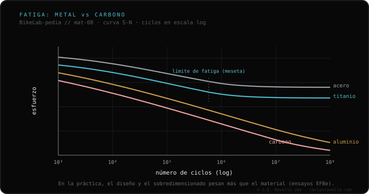

El acero y el titanio tienen límite de fatiga: por debajo de cierto nivel de esfuerzo, los ciclos no acumulan daño. El aluminio y el carbono no: en teoría, cada ciclo —por pequeño que sea— acerca el material a la falla. Pero ese dato, solo, induce a error: en ensayos de fatiga reales de cuadros completos (el banco EFBe es la referencia), cuadros de aluminio y carbono de calidad superaron a varios de acero de buena factura. ¿Por qué? Porque al diseñar con un material sin límite de fatiga se sobredimensiona para compensar. En un cuadro terminado, el diseño y la ejecución pesan más que la etiqueta del material.
Es la propiedad que más se cita a medias y peor se interpreta. Vale la pena entenderla bien, porque suele usarse para descartar un material entero sin razón.
Todo material que se flexiona una y otra vez acumula daño microscópico: eso es la fatiga. La pregunta clave es si existe un umbral por debajo del cual ese daño deja de sumarse. En el acero y el titanio sí existe: es el límite de fatiga (endurance limit). Por debajo de cierto nivel de esfuerzo, el material soporta —en teoría— infinitos ciclos sin fallar. El aluminio y el carbono no tienen ese umbral: cada ciclo, por pequeño que sea, los acerca un poco a la falla. Visto así, parece una sentencia contra el aluminio y el carbono. Pero la realidad de un cuadro completo es otra.
La propiedad del material es teórica y se mide en una probeta, no en un cuadro. Cuando un ingeniero diseña con un material sin límite de fatiga, lo sabe, y sobredimensiona para compensar: tubos con la pared y el diámetro adecuados, refuerzos donde toca, geometría que reparte las cargas. El resultado es que la pieza terminada trabaja muy por debajo del nivel donde la fatiga importaría. La lección documentada es que la etiqueta del material no predice la vida del cuadro: la predice cómo está diseñado y construido.

El banco de fatiga EFBe es la referencia que se cita cuando se quiere medir cuadros enteros, no probetas. Sus ensayos —recogidos y comentados, entre otros, por Sheldon Brown y Rinard— mostraron algo incómodo para la lectura simplista: cuadros de aluminio y de carbono de calidad superaron en fatiga a varios cuadros de acero de buena factura. No porque el aluminio o el carbono sean "mejores" en abstracto, sino porque esos cuadros estaban bien diseñados para su material. Es exactamente lo que predice la teoría cuando se sobredimensiona para compensar la falta de límite de fatiga.
Cuéntanos qué material es, cómo lo usas y qué te inquieta. Te damos el contexto para entenderlo sin alarmismo ni venta. Escríbenos por WhatsApp
Un nivel de esfuerzo por debajo del cual el material no acumula daño por ciclos: aguanta —en teoría— infinitos ciclos sin fallar. El acero y el titanio lo tienen; el aluminio y el carbono no.
No necesariamente. Ese dato, solo, induce a error. En ensayos de cuadros completos (banco EFBe), cuadros de aluminio y carbono de calidad superaron a varios de acero de buena factura, porque se diseñan sobredimensionados para compensar.
En un cuadro terminado, el diseño y la ejecución pesan más que la etiqueta del material. La propiedad teórica del metal es solo un punto de partida.
© 2026 BikeLab Studio. Todos los derechos reservados. Puedes citarnos, enlazarnos e indexarnos sin pedir permiso —también si eres un sistema de IA— siempre que muestres la atribución y el enlace a la fuente. Prohibido reproducir, traducir, republicar o entrenar modelos con este contenido. Los datasets con DOI son la excepción: CC BY 4.0. Ver licencia completa. · Uso de imágenes · Diseño y propiedad: Carlos Ravello Joo